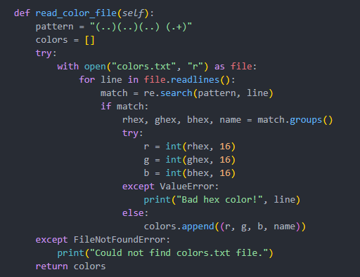
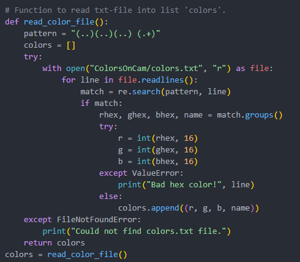
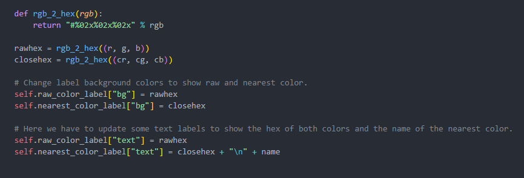
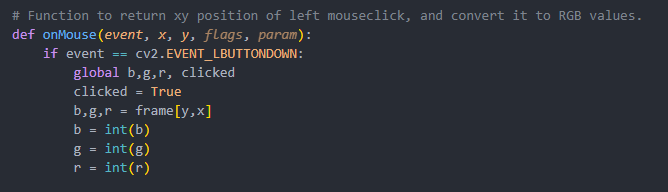
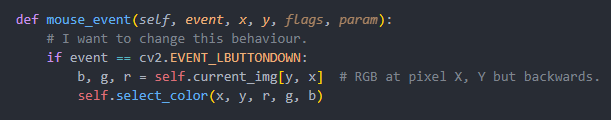
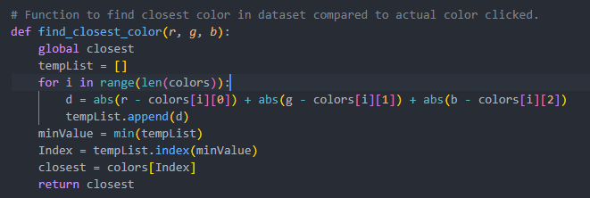

OpenCV tool that identifies colors from camera feed or static images.
This Python-based application uses OpenCV to detect and label colors in real-time or from uploaded images. It consists of two scripts — one handling static images, and the other extending functionality to a live webcam feed. RGB values from selected pixels are matched to named color values using CSV data and displayed on-screen with their closest matching names.
• Real-time color detection using OpenCV and NumPy
• Mouse click event tracking to fetch pixel RGB values
• CSV-based color name mapping via Euclidean distance
• Hex conversion and on-screen color label overlays
• Works with both static images and live webcam input
Python, OpenCV, NumPy, CSV
• Handling inconsistent lighting in live camera mode
• Efficient color matching to named color datasets
• Ensuring labels remain readable against different backgrounds
This project strengthened my understanding of computer vision fundamentals and OpenCV workflows. It also gave me hands-on practice with color models, pixel-level operations, and integrating user interactions in real-time applications.

Figure 1. Function from ColorTool.py responsible for reading and converting named color data from a text file.

Figure 2. Similar function in ColorsOnCam.py modified to locate the text file inside the active webcam folder.

Figure 3. The rgb_2_hex function converts RGB tuples to hexadecimal format for color display and overlay.

Figure 4. Captures pixel position and RGB values when the user clicks anywhere on the image or frame.

Figure 5. Object-oriented version of mouse event handling from the webcam-based file, allowing precise RGB sampling.

Figure 6. Core logic that calculates the nearest color name match from dataset using absolute RGB distance.